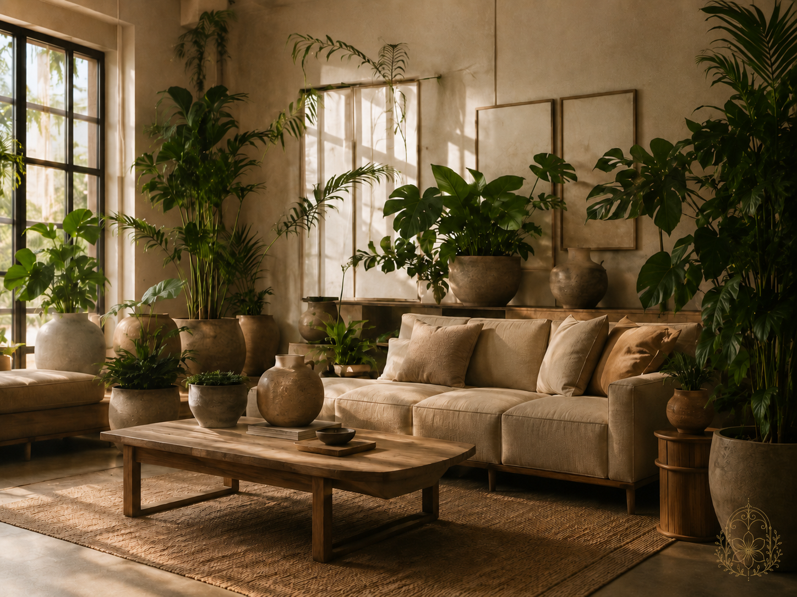

Design
Living environments shaped to be felt.
Through botanical styling, plant design, and natural materials, Wild Petal Design creates spaces that feel grounded, intentional, and alive.
About
Wild Petal Collective is shaped by mountain light, wild growth, natural materials, and the slow intelligence of the Sierra landscape. We create spaces and objects that invite beauty to feel lived with, not staged.
Across botanical design and talismans, the work is rooted in presence: what surrounds you, what steadies you, and what you return to when you want to feel more like yourself. Some expressions live in a room. Others are worn pieces.

Two Paths
Wild Petal works on both the world around you and the world you carry with you.
Design
Through botanical styling, plant design, and natural materials, Wild Petal Design creates spaces that feel grounded, intentional, and alive.
Talismans
The Talismans Collection is a path for reconnecting, revisiting, and remembering through touch, ritual movement, private reflection, and a cloud-optional experience.
Over time, reflection becomes material as rings, layers, and slow visible changes leave a trace on the piece itself, turning time spent returning to yourself into something tangible.
Patent pending.